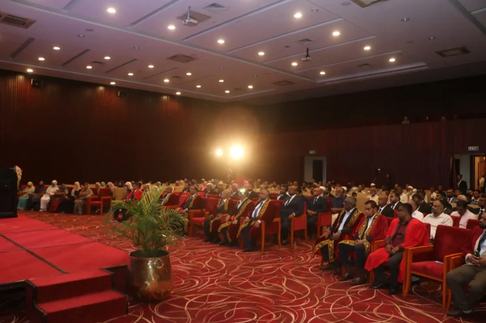

A not-for-profit guarantee company (Reg. No: GA00307148) incorporated in Sri Lanka — serving as the umbrella governance entity overseeing a network of educational institutions committed to accessible, high-quality technical, vocational, and tertiary education for communities across the island.
The Insight Foundation is a comprehensive educational development institution dedicated to strengthening Sri Lanka's human capital and advancing social inclusion through an integrated ecosystem of higher education, vocational training, and community capacity-building. Our work is aligned with national development priorities, international academic standards, and the United Nations Sustainable Development Goals, ensuring that every initiative contributes meaningfully to long-term national progress.
Through its three constituent institutions — IIMT Campus, the Insight College of Technology (ICT), and the Insight Foundation's education development projects — the Foundation delivers a continuum of learning opportunities ranging from craft-level vocational programmes to internationally recognised degree pathways. Together, these institutions serve as a bridge between educational access and economic opportunity, particularly for marginalised and linguistically diverse communities across Sri Lanka.
To foster a knowledge-based society through educational empowerment of individuals and communities.
A centre of excellence delivering accessible, high-quality education aligned with national priorities and UN SDGs.
Full scholarships for orphaned students across ICT and IIMT Campus — ensuring financial hardship never determines who gets to learn.
Every institution has an origin story. Ours begins with a single workshop in Mawanella, a community that needed skills, and a conviction that technical education could change lives. What followed was fifteen years of steady institution-building — expanding programmes, acquiring infrastructure, earning accreditation, and ultimately creating the governance framework needed to sustain this work for generations.
The Mawanella Institute of Technical Training (MITT) was established, offering craft-level courses in Welding, Electrical, Plumbing and Building Service — addressing acute skills gaps in the Mawanella community and surrounding districts.
The Insight Education Trust (IET) was constituted, facilitating the acquisition of a 4.5-acre campus site — establishing the physical and institutional foundation for long-term growth.
Re-registered as a not-for-profit guarantee company under the name Insight Institute of Management and Technology (IIMT). Expanded operations to Puttalam, Colombo and Akurana, diversifying programme offerings and broadening geographic reach.
Launched IT coaching for the BIT external degree in partnership with the University of Colombo School of Computing (UCSC), marking the institution's entry into the higher education space.
Incorporated as a Company Limited by Guarantee, Reg. No. GA 00307148 — formally establishing the umbrella governance entity that today oversees all institutions, programmes and strategic Our Partners within the Insight network.
A government panel commended the Foundation's facilities and institutional readiness, granting formal degree awarding status — making Insight Foundation one of Sri Lanka's very few non-profit institutions authorised to award its own degrees.
By 2024, what had started as a single technical training centre had grown into something structurally different: a family of institutions — IIMT Campus delivering higher and executive education, ICT technical college network delivering NVQ training, and a set of emerging community and educator-development projects — each with its own academic identity, but all pursuing the same mission.
That growth created a governance question every maturing institution eventually faces: how do you keep multiple entities strategically aligned, financially accountable, and mission-locked, without collapsing their distinct identities into one another?
The answer was to build an apex body above the institutions, rather than inside any one of them. On 12 August 2024, the Insight Foundation was formally incorporated as a Company Limited by Guarantee, under Registration No. GA 00307148 — establishing, for the first time, a single legal and governance umbrella for the entire Insight ecosystem.
The choice of structure was deliberate, not administrative box-ticking:
Every rupee of surplus stays inside the mission — reinvested in scholarships, campuses, and programmes rather than distributed as profit. For Zakat contributors, that structural fact matters as much as any policy statement: it is the difference between an institution that could divert funds and one that structurally cannot.
IIMT Campus can focus on academic rigour; the technical colleges on TVEC compliance; Education Development on community outreach — while the Foundation holds the strategic oversight, the Endowment and Waqf Fund, and the accountability relationships that no single operating institution should carry alone.
Trustee governance — not founder ownership — means the institution's continuity does not depend on one person remaining in place. That is what allows the Foundation to make century-scale commitments — an endowment fund, named scholarships, permanent campuses — with credibility.
As the ecosystem grows — new campuses, new degree pathways, new transnational Our Partners — the Foundation structure lets new initiatives launch under a proven, audited, regulator-recognised parent, rather than each requiring its own legal foundation from scratch.
A UK university weighing a transnational education partnership, a diplomatic mission considering a grant, or a corporate donor structuring a CSR programme all need one accountable legal body to sign with — not three or four separately governed institutions with overlapping mandates.
The Insight Foundation is governed by a Board of Trustees and supported by dedicated institutional leadership teams across all entities.
The Investment Oversight Committee (IOC) provides governance and strategic oversight of the Insight Foundation Endowment and Waqf Fund. Established under the Foundation's constitution — specifically the mandates on Financial Oversight, Legal and Regulatory Compliance, and Risk Management — the IOC ensures that the Fund is managed with financial prudence, full regulatory compliance, and strict adherence to Islamic Finance (Shariah) principles, sustaining scholarships for Zakat-eligible students as a long-term, equity-driven commitment.
The IOC is composed of a Board representative (Chair), a finance professional with Islamic Finance expertise, a legal/regulatory advisor, a risk management specialist, a Shariah Advisor, and a non-voting representative from the Scholarship Committee. It reports quarterly and annually to the Board, and commissions an annual Shariah audit to certify the Fund's continued compliance.
The Insight Foundation exists to close the distance between where a young person begins and where their talent can take them. We do this by delivering an integrated learner journey — from first enrolment, through scholarship support where needed, to graduation and, ultimately, employment. Donors and partners are able to see the impact of their support at every stage of this continuum.
The Insight Foundation's education development project extends the Foundation's mission into the wider community through capacity-building initiatives, educator development programmes, and outreach activities that broaden opportunity beyond enrolled learners — strengthening families, schools, and communities across Sri Lanka.
Helping partner schools set clear, achievable institutional development goals.
Building stronger links between schools, parents, and the wider community.
Professional development for educators to strengthen classroom practice.
Structured training pathways for school staff and administrators.
Strengthening foundational learning at the primary level.
Supporting scouting and character-building programmes in schools.
Helping students make informed choices about further study and careers.
Bringing digital tools and digital literacy into the classroom.
Targeted support to raise mathematics outcomes for students.
Broadening student development beyond the core curriculum.
Introducing students to robotics and computational thinking.
Improving the physical learning environment in partner schools.
Supporting ICT and IIMT Campus is a rigorous, auditable scholarship system - including Zakat-eligible scholarships administered as per Miskath Research Institute guidance - ensuring that financial barriers never prevent a learner from progressing.
A growing alumni network reinforces this ecosystem through mentorship, fundraising, and institutional advocacy, creating a cycle of continuity and community upliftment that carries each generation of graduates back into support for the next.